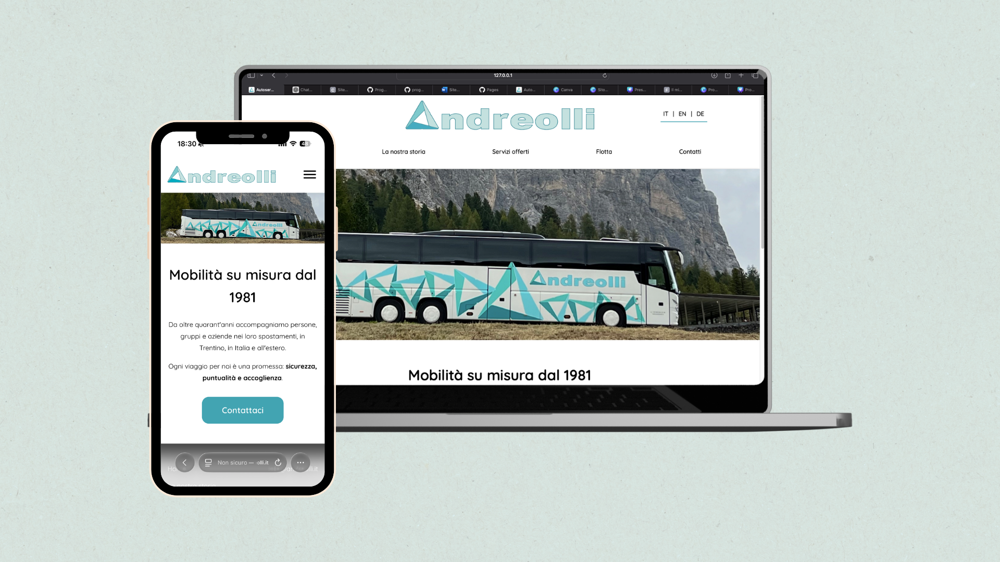

Autoservizi Andreolli
Sito web per azienda di trasporti familiare
- Anno: 2025
- Ruolo: UX/UI Designer
- Strumenti: Figma, Illustrator, VS Code, HTML/CSS/JavaScript, GitHub
Overview
Il progetto ha portato Autoservizi Andreolli online con una presenza digitale completa. Partendo da una situazione in cui l'azienda aveva solo un numero di telefono, ho progettato e sviluppato un sito web responsive con approccio mobile-first, sistema multilingua (IT/EN/DE) e architettura informativa strutturata su 5 pagine. Il sito include design system coerente, form contatti funzionante e storytelling della storia familiare dell'azienda attraverso tre generazioni.
Processo di lavoro
Il processo è stato articolato in cinque fasi principali:
1. Discovery
Analisi degli obiettivi aziendali, definizione dell'architettura informativa e studio del logo esistente per guidare le scelte di design.
2. Wireframing
Progettazione mobile-first con griglia a 4 colonne, definizione dei flussi utente e strutturazione delle 5 pagine principali.
3. User Interface
Sviluppo del design system (palette colori, tipografia Quicksand, componenti), UI design responsive e creazione di interfacce coerenti e accessibili.
4. Development & Launch
Sviluppo frontend con HTML, CSS e JavaScript, implementazione sistema multilingua, form validation e pubblicazione online tramite GitHub Pages.
Risultati
- Presenza digitale completa da zero
- Sistema multicanale di acquisizione clienti
- Sito responsive mobile-first accessibile internazionalmente
- Storytelling efficace della storia familiare dell'azienda